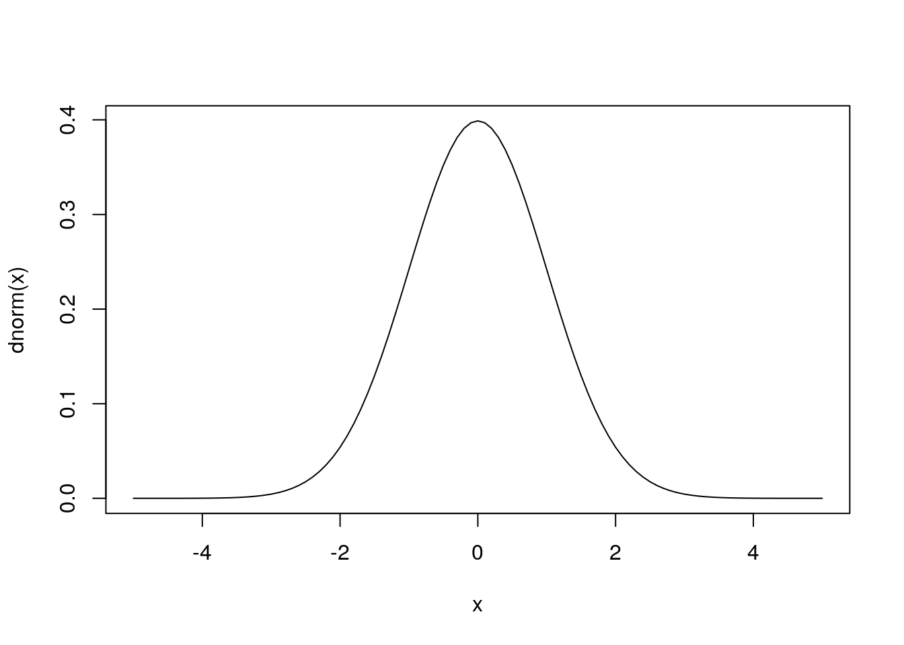

Incrusta Aplicaciones shiny en tu pagina web.
En esta seccion hablaremos de como se puede incrustar una aplicacion shiny en tu pagina web en los siguientes pasos:
primer paso
Primeramente debemos de tener una cuenta en Shiny_apps, la cual nos permitira hospedar nuestra aplicación en la red; esta pagina te permite tener hasta 5 apps subidas, pero tienen un limite de uso de 12 horas por mes, asi que debes de tener en cuenta eso al momento de presentar tu pagina.
Luego de haber creado tu cuenta, leeras la bienvenida que te dara la pagina junto a un instructivo para subir las aplicaciones el cual te pedira que instales un paquete en el R ,rsconnect() el cual hara el vinculo entre tu cuenta y tu pc.
Luego de eso solo debes desarrollar la aplicación que deseas subir y pulsar el en botón azul publish que estara en la esquina superior derecha de tu script, lo cual publicara luego de unos pasos la aplicacion en tu cuenta shiny.
Segundo paso
Ya que tu app se encuentra en la red, crearemos un documento interactivo.
Crea un documento R markdowm desde tu consola y en el script debes poner debajo del titulo una linea que contenga: runtime: shiny, exactamente asi (tener cuidado con el espaciado).
Luego solo debes insertar un chunk que contenga la función knitr::include_app() y la url de la aplicacion dentro del documento.
Ejemplo ilustrado
Nota: Para no tener inconvenientes recuerda cuando corras el documento con el boton knit ,luego la ventana emergente la abras en el buscador.
Graficando una función de masa/densidad de probabilidad
En este apartado veremos como crear una grafica de densidad de una variable continua, en el software R, para esto tomaremos como ejemplo una variable normal; recuerde, si \(x\sim n(\mu,\sigma^2)\) luego su f.d.p esta dada por: \[f.d.p(x)=\frac{1}{\sqrt{2\pi}\sigma}e^{-\frac{1}{2}(\frac{x-\mu}{\sigma})^2}; -\propto<x<\propto \] Esto no tenemos que programarlo, en r existen varias manera de poder usar su f.d.p, como la función pnorm() para calcular una probabilidad.
graficando la curva
Para esto usaremos la función curve() de la siguiente manera que recibe la funcion que queremos dibujar y luego el dominio en que queremos hacerlo.
#distribución normal con media = 0 y desviacion estandar = 1
curve(dnorm(x),from=-5,to =5)
Podemos refinar un poco el grafico de esta manera:
#distribución normal con media m y desviacion estandar sd(se pueden reemplazar los valores)
m<- 5
sd <- 2
# el dominio esta a 4 desviaciones de la media ya que casi todas las observaciones estaran allí
curve(dnorm(x,mean= m , sd = sd),from = m-4*sd, to= m+4*sd,
main="Distribucion normal")
por ultimo cambiemos las etiquetas de los ejes y demosle un nombre apropiado
m <- 10
sd <- 5
curve(dnorm(x,mean= m , sd = sd),from = m-4*sd, to= m+4*sd,
main=paste("Distribucion normal(",m,",",sd,")" ),
ylab="Probabilidad",col="red",lwd=3 )